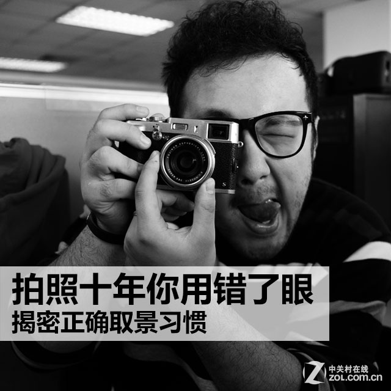
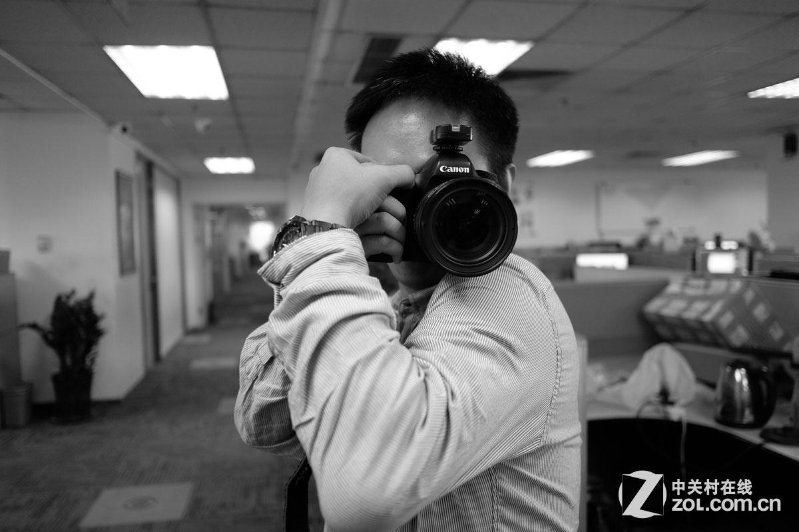

取景习惯五五开
今天我们来说说关于拍摄习惯的问题，笔者接触摄影也有五六年了，小弟自知摄影水平有限，但是对于自己的拍摄习惯还是很有自信，但是最近被身边一些朋友指出我用左眼取景的方式不正确，在之后的几天里，我细心的观察了身边的同事们，发现大家基本的摄影姿势几乎都一样，但是在取景习惯这一点上却无法统一，有人习惯用左眼取景而有人则用右眼取景，那么到底用那只眼取景才是正确的呢？

网络上关于“取景到底应该用那只眼”的问题有很多种解释，有人说跟是不是左撇子有关系，也有人说是双眼距离的关系，更有人说是因为怕鼻子蹭在屏幕上的关系，总之答案有很多种，但是笔者对于网上的一些说法并不是很认同，在我看来这些东西绝对不是一个很笼统的问题，要想知道真相，我们还是需要自己去探索和证实。

取景习惯基本上是五五开
笔者在部门内部做了一个随机小调查，发现大家的取景习惯基本是五五开，不管是用左眼的同学还是用右眼的同学都有各自“无法撼动”的理由，谁也无法说服谁，当然改变别人习惯这件事，绝对不是靠几句话就能成功的，所以今日我们就用实践揭开真相。
右眼取景有优势
即便笔者是个坚定的用左眼取景的人，但是不得不承认一个事实，那就是用右眼取景的人有一些天生的优势，首先是视野优势，用右眼取景的朋友左眼可以同时睁着，去查看取景器以外的环境，如果使用左眼取景，右眼则会被握持相机的右手遮挡，相比于左眼取景，右眼取景的视野明显更大一些，当然使用右眼取景的一些人，也会习惯性的闭上左眼，也正是因为这个问题，才会有人用左眼取景，不然左眼取景就真的没有意义了。
右眼取景视线更宽，可以观察取景器以外的“世界”。
而右眼取景的第二个优势，也是我们左眼用户无法回避的一点，那就是现在市面上大多数单反相机是为右眼取景设计的，也许很多网友不理解，但是笔者可以告诉你一个最简单的理由，现在所有单反相机说明书上的正确手持相机方法都是右眼看取景器。
不管是官方广告还是官方初级使用教程都是以右眼取景作为拍照的正确姿势
成龙、王力宏的代言广告相信大家都欣赏过，有些网友会觉得厂商花了大价钱请来了明星代言，一定要让明星把脸露出来，不然那钱就白花了，其实这么想没有错，但是在说明书上的正确手持相机方法上也是右眼取景，这些人总不是大明星了吧，所以从厂商的指引中我们可以看到，右眼取景确实是“正确”的拍摄方式。
左眼取景有福利
刚才说了半天右眼取景的优势，下面笔者也要说说左眼取景的好处，作为一个左眼取景的摄影爱好者来说，我们虽然并非“正统”但是也不是毫无优势可言，早前有一本名为热靴日记的摄影书籍，其中有几页写下了左眼取景的福利，因为之前那本书笔者实在找不到了，所以只好找来同事做模特，翻拍了一个版本。

稳定性握法
上面这张图片是单反相机加强稳定性的握法，在使用左眼取景时可以轻松的做到（其实右眼取景也可以使用这种稳定握法，但是违反了人体工程学，因为市面上很少有为左撇子设计的相机，硬来的话会对脖子造成损伤），同理，除了稳定性之后，左眼取景也增加了单反相机的扩展性，比如一个人操作离机引闪这种颇有难度的摄影技巧。

用左眼取景，将相机稳定在肩膀，可独立操作离机引闪。
在本页中笔者举了几个例子，说了一下左眼取景的福利，其实笔者说了这么多也只是想给左眼取景的朋友一起安慰（也是给笔者自己一个安慰），但是无论如何，右眼取景都是“正统”，但是笔者依旧觉得，大家没必要按着说明书上说的去办。
区别主眼和辅眼
也许大家都知道主手与辅手区别（就是左撇子和右撇子的区别），但是很少有人知道人的眼睛也分为主视眼和辅视眼，每个人不管你视力是好是坏，也不管你眼睛的大小和颜色，都会有一个主视眼，而这个主视眼可能是左眼，也可能是右眼。而我们人的大脑习惯利用主视眼的成像来分析和定位物体，因为主眼所看到的东西会被大脑优先接受，那么为什么会造成主视眼比辅视眼更强大呢？造成这样的原因主要还是用眼习惯问题，因为主眼由于运动多，获得的补给也多，往往发育的比辅视眼好。

我们眼睛和手一样，也是分主辅的。
很多人可能觉得主视眼和辅视眼眼这个问题过于深奥，其实关于这个问题真没有那么难理解，笔者举个比较突出的例子，我们在街上看见有得小孩戴着眼镜，一只眼镜被黑布蒙着，这是为什么呢？这就是为了纠正辅眼发育严重不良，黑布遮挡主眼，这样，辅眼被迫承担起了“主人翁”的责任，不停地观察分析事物，而身体的养分也源源不断地补充过去，经过时间的累积，辅眼发育不良的情况就得到解决啦。上面笔者向大家阐述了一下主视眼与辅视眼区别，那么我们如何自行分辨自己哪只眼睛是主视眼呢？网上有很多种自己测主视眼和辅视眼的方式，而笔者也是选用了我认为最简单的一种方式给大家做一个说明。

测试你自己的主视眼
通过刚才上面这个测试，大家一定能分辨出自己的主视眼和辅视眼，笔者在本页开始也说过，主视眼能够更好的帮助大脑分析成像和定位物体，所在笔者看来，用那只眼睛取景都不是问题，问题是你要选择主视眼来取景。其实很长时间以来，笔者都把用那只眼取景这件事看成是一个无关紧要的习惯问题，就跟你喜欢用食指按快门还是中指按快门的区别一样。但是通过笔者了解主视眼与辅视眼的区别之后，我更推荐大家用主视眼取景。
延伸阅读：双眼的色温问题
其实本页的内容和今天的主题已经无关，但是既然都说到双眼了，那笔者也就借着这个机会再扯点别的（其实主要是因为这个问题内容量过小，没必要再另外写一篇文章了），通过刚才的介绍想必大家都对主视眼和辅视眼有了一定的认识，但是我们的双眼除了这些差别，在色温上其实也有一些差别的。
笔者用直观的方式作了一个示意图，当然这么画是错误的，只为大家更好的理解色温差的问题。
正常人的双眼色温是有细微的差别的（患有色盲症的除外），一只偏冷，而另一只则偏暖，这个东西是天生的。笔者自己也拿了一张白纸做了一个实验，我的一只眼睛色温明显偏高，整体成像有些发青色，而另一只眼睛的色温则相对于低一些，有些发黄。为什么说双眼的色温差是天生的呢？其原因很简单，因为我们的双眼看东西是有立体感的，按着笔者的理解应该和早期的红蓝3D眼镜原理一样，只是红蓝3D眼镜将立体的效果更加夸张化了。
笔者本想把双眼色温的问题和主视眼与辅视眼放在一起说的，但是没有证据证明主视眼一定偏冷或者偏暖，所以就在最后简单的和大家介绍了一下，不过在我看来这一页和今天的主题也不是毫无关系，我一直再想一个问题，我们每个人欣赏画面的角度不同，有没有可能有些人天生喜欢暖色调的画面，所以潜意识中不喜欢用冷色调的眼睛去取景呢？人体的奥秘太多太多，不是我一个影像编辑可以研究透的，所以我觉得这事咱们了解一下就好了。